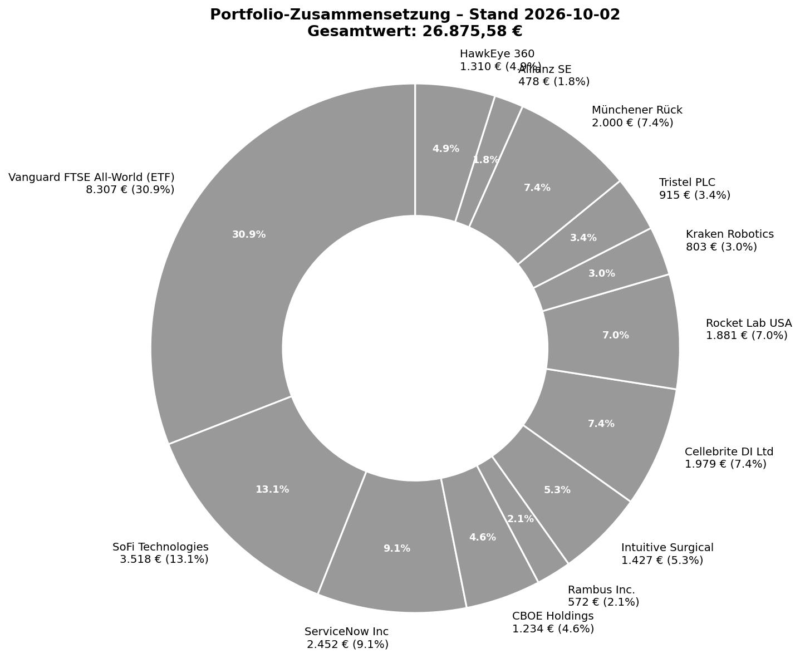
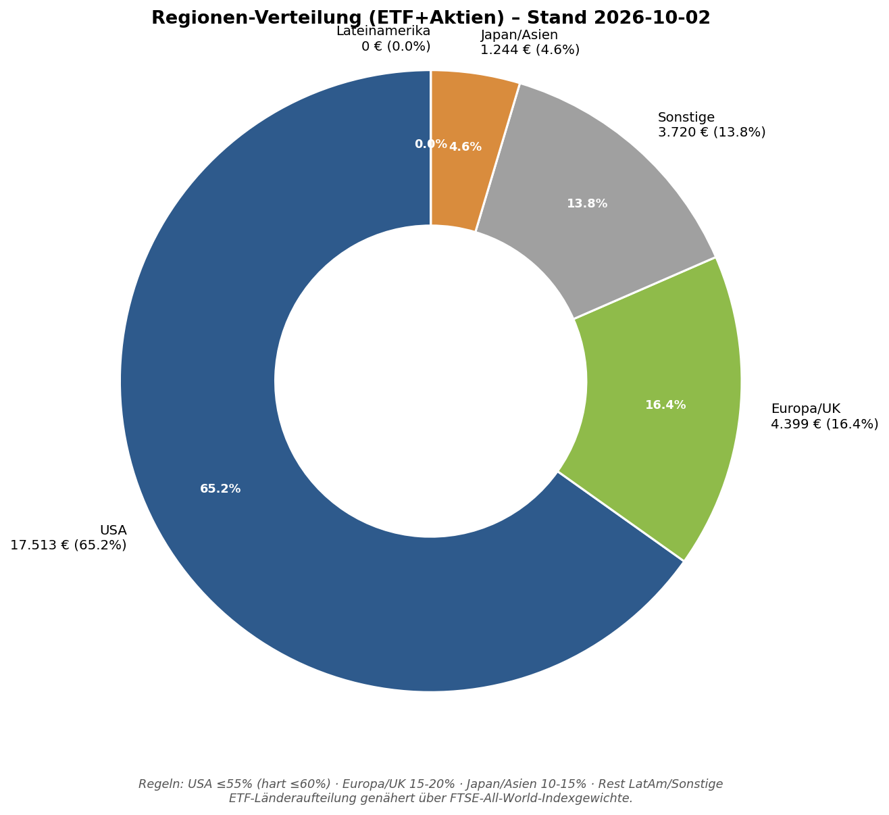
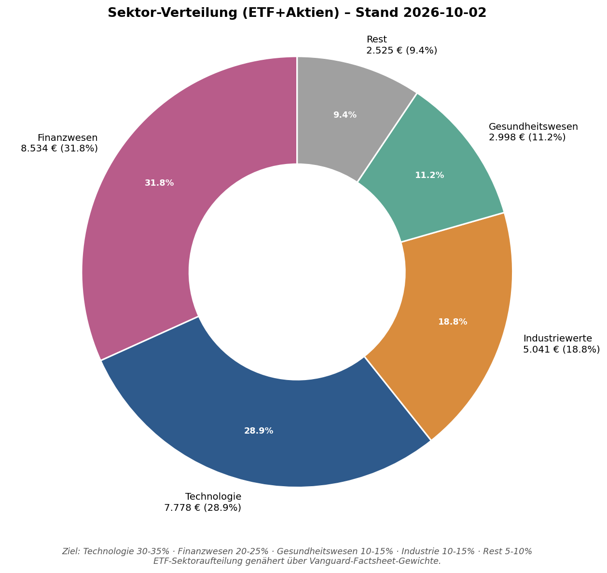
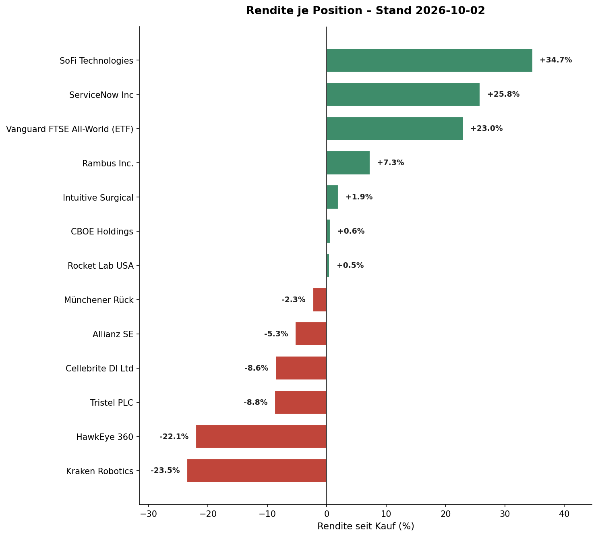
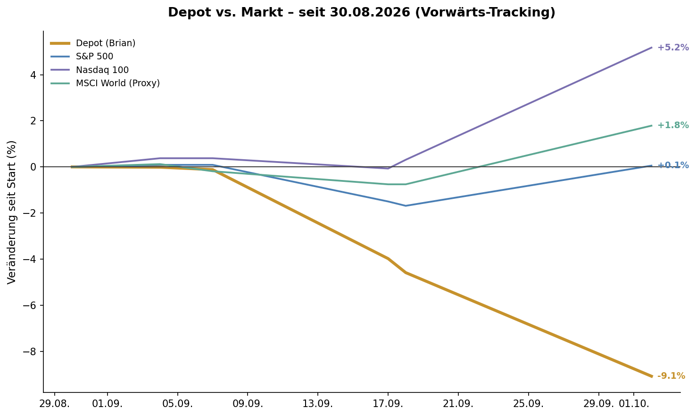

Dieser Lauf deckt bewusst ein verlängertes ~2-Wochen-Fenster (18.09.-02.10.2026) ab: zwischen dem 24.09. und 01.10. fielen alle 4 Hermes-Cron-Jobs lautlos aus (OpenAI-Credit-Erschöpfung, HTTP 429) — inkl. des 25.09.-Wochenfazits. Brian hat die Lücke über mehrere Ad-hoc-Chat-Sessions aktiv geschlossen (Depot-Updates, Transaktionen, MCD-Nachprüfung, ISIN-Korrekturen); dieser Report konsolidiert diese Zwischenstände zu einem vollständigen Wochenfazit. Datenlücke dieses Laufs: weder Scalable-Capital-MCP noch Twelve-Data-MCP waren in dieser automatisierten Session authentifiziert (beide benötigen einen interaktiven OAuth-Schritt) — Depotzahlen sind der letzte bestätigte Stand aus der 02.10.-Vormittags-Session, Benchmark-/Makro-Werte stammen aus WebSearch. Siehe Seite 8 für die vollständige Transparenz-Erklärung.
Der Zuwachs seit 18.09. ist primär strukturell: die 6 am 24.09. verkauften Depot-Positionen (Constellation Software, Hermès, MercadoLibre, Bank Central Asia, Broadridge, A10 Networks) laufen jetzt als Watchlist-Kandidaten mit [EX-DEPOT]-Tag weiter — plus 3 echte Neuaufnahmen mit vollem Quick-Filter/Full-Deep-Dive (Oruka Therapeutics/ORKA, WALLIX Group/ALLIX, Kokusai Electric/6525) und McDonald's (Champions, Full Deep Dive 22.09. + Nachprüfung 02.10.). Die beiden zuvor offenen, regionsunabhängigen Talent-Slots sind damit beide mit Kandidaten besetzt (ORKA + ALLIX) — Watchlist-Aufnahme ist kein Depot-Kauf, die Entscheidung liegt weiter bei Brian.
Twelve Data war in dieser automatisierten Session nicht authentifiziert (siehe Seite 8) — eine vollständige Neubewertung aller 46 Watchlist- plus 12 Depot-CRV-Ampeln gegen frische Kennzahlen war damit nicht möglich. Die Ampeln bleiben auf dem zuletzt dokumentierten Stand der jeweiligen Einzelanalysen (teils 18.09., teils aus den Full-Deep-Dives dieses Fensters) stehen — keine automatische Neuherleitung aus veralteten/unsicheren Daten, um keine Scheinpräzision zu erzeugen. Sobald Twelve Data/Scalable in einer kommenden Session wieder verbunden sind, sollte die nächste reguläre Pflege das nachholen.
| Ticker | Firma | Einordnung |
|---|---|---|
| 7741 | Hoya Corp. | Kurs weiterhin deutlich über der hergeleiteten Zielzone (€92-106) — kein Nachkaufpunkt. |
| 6146 | Disco Corp. | Kurs weiterhin deutlich über der hergeleiteten Zielzone (€159-187) — kein Nachkaufpunkt. |
| 6525 | Kokusai Electric | Nachkauf-Zone ¥6.500-7.800 (Full Deep Dive 21.09.), Kurs ¥8.884 (18.09.) — über der Zone, kein Signal. |
| MCD | McDonald's | Siehe depot/offene_empfehlungen.md — Einstiegszone ≤200€/~225$, Kurs 02.10. 205,13€, praktisch an der ersten Tranche. |
Watsco/Rollins/FICO-Beobachtungspunkte (Margen-Normalisierung, H2-Guidance, VantageScore-Adoption) bleiben unverändert offen — FICO weiterhin ⚠️ RISIKO/🟡 GELB, Full-Deep-Dive-Refresh bleibt empfohlene nächste Priorität, in diesem Fenster aus Zeitpriorität nicht nachgeholt.
| Regel | Ziel | Ist (02.10.) | Status |
|---|---|---|---|
| Größte Einzelposition | ≤10% (Ausnahme bis 12%) | SoFi Technologies 11,05% | INNERHALB AUSNAHME |
| Kleinste Position | ≥1% (außer Trace) | Allianz SE 1,50% | ERFÜLLT |
| ETF-Mindestanteil | ≥50% (Ziel langfr. 60%) | 26,08% | VERSTOSS, langsamer Aufbau (war 24,41% am 18.09.) |
| Region USA | ≤55% (hart ≤60%) | 65,17% | NEU: VERSTOSS der harten Obergrenze (war 53,70%) |
| Region Europa/UK | 15-20% | 16,37% | IM ZIELBAND |
| Region Japan/Asien | 10-15% | 4,63% | DEUTLICH UNTERBESETZT (war 9,55% — BCA-Verkauf) |
| Region Sonstige (CA/IL) | kein festes Band | 13,84% | HINWEIS |
| Region LatAm | kein festes Band | 0,00% | KEINE POSITION MEHR (MELI verkauft) |
| Sektor Finanzwesen | 20-25% | 31,76% | WEITERHIN KLAR ÜBER ZIEL |
| Sektor Technologie/Halbleiter | 30-35% | 28,94% | KNAPP UNTERBESETZT |
| Sektor Industriewerte | 10-15% | 18,76% | NEU: ÜBER ZIELBAND (RKLB/Kraken/HawkEye-Konzentration) |
| Sektor Gesundheitswesen | 10-15% | 11,16% | IM ZIELBAND |
| Sektor Rest | 5-10% | 9,40% | IM ZIELBAND (war 16,41% — Hermès/MELI raus) |
Die 6-Positionen-Verkaufswelle vom 24.09. hat 4 der 6 Zielbänder material verschoben, ohne dass das eine bewusste Strukturentscheidung war: USA (53,70%→65,17%) und Industriewerte (11,72%→18,76%) sind neu über ihre Bänder gerutscht, Japan/Asien (9,55%→4,63%) ist jetzt die mit Abstand größte Lücke (Bank Central Asia war die einzige Japan/Asien-Position im Depot), während „Rest“ (16,41%→9,40%) und Gesundheitswesen sich durch den Wegfall von Hermès/MercadoLibre normalisiert haben. Kein automatisches Verkaufssignal (Zielbänder sind weiche Vorgaben, siehe Agent-Playbook.md) — aber die klare Konsequenz für künftigen Kapitaleinsatz: neue Positionen sollten bevorzugt Japan/Asien und Nicht-USA adressieren, ein McDonald's-Kauf (USA, Seite 3) würde die Lücke dagegen verschärfen. Hypothetisch mit MCD (~2.060€): USA stiege auf ~67,6%, Rest auf ~15,8% (zusätzlich über Band).





| Position | Bewegung | Grund |
|---|---|---|
| Rambus (Depot) | +24,9% | Fortsetzung der Rally seit dem Full-Deep-Dive-Refresh 21.09., kein neuer fundamentaler Treiber — weiterhin weit über der Nachkauf-Zone $68-75 |
| Rocket Lab USA (Depot) | +15,2% | Kein klarer Einzelgrund identifiziert — allgemeine Kursstärke (Kategorie/Rating unverändert 🔴 KEIN NACHKAUF) |
| CBOE Holdings (Depot) | +3,0% | Beide dokumentierten Nachkauf-Zonen inzwischen klar verlassen ($277,35 vs. Zone $255-270) |
| HawkEye 360 (Depot) | -9,5% | Kein News-Treiber gefunden — Fortsetzung der Post-IPO-Space-Tech-Neubewertung |
| Tristel PLC (Depot) | -9,3% | Kursstreuung zwischen Quellen dokumentiert (370-409p), WebSearch statt Twelve Data — mit Vorsicht zu lesen |
| SoFi Technologies (Depot) | -6,6% | Kein klarer Einzelgrund identifiziert — allgemeine Marktbewegung |
Transparenz-Hinweis: diesmal konnten nur die 10 noch per Twelve Data/WebSearch zuletzt dokumentierten Depot-Einzelwerte verglichen werden, nicht das gesamte 46-Werte-Watchlist-Universum — Twelve Data war in dieser Session nicht verbunden (siehe Seite 8). innoscripta (Kauf+Stop-Loss-Exit binnen 2 Tagen, -3,9% realisiert) ist als geschlossene Position bewusst nicht in dieser Liste, siehe Seite 2.
Keine Position steht aktuell in Kategorie 4 (Teilverkauf) oder 5 (Verkauf erwägen) — kein Umschichtungs-Kandidat in diesem Fenster. Die 6-Positionen-Verkaufswelle vom 24.09. war eine von Brian selbst initiierte Restrukturierung, kein Abbruch-/Stop-These-Trigger-Fall.
Keine FOMC-/EZB-/BoJ-Termine mehr in den nächsten 4 Wochen (nächste: FOMC 27./28.10., EZB 28./29.10., BoJ 29./30.10.). Tagesniveau 02.10.: VIX 15,52 (-5,3%, ruhig), Fear&Greed 27,2 (Fear-Zone, leicht schwächer als zuletzt), S&P 500 ~7.716 (+0,89% Tagesbewegung nach einem schwachen US-Arbeitsmarktbericht — nur 29.000 neue Stellen vs. 84.000 erwartet, Arbeitslosenquote 4,2%), Nasdaq 100 markierte mit ~30.957 ein neues Rekordhoch (Markt reduzierte seine Fed-Hike-Erwartung nach dem schwachen Jobsbericht). Neuer Beobachtungspunkt: US-10-Jahres-Rendite kletterte auf 5,27% — ein neues Hoch, über den bisherigen Spitzenwerten (5,10% am 23.09., 5,041% am 15.09.) trotz der schwächeren Jobsdaten. Zusätzlich Brent weiterhin >$102 (dritter Bericht über einen US-Flugzeugträger im Nahen Osten) — beides noch nicht in einem vollständigen Korrektur-Risiko-Score-Neu-Check verarbeitet (letzter vollständiger Check 15.09.: 51/126, 🟠 HOCH; letzter Teil-Update 22.09.: ~46/126, 🟡 ERHÖHT). Kein Material-Shift-Kriterium ausgelöst (keine CB-Notfallentscheidung, VIX rückläufig, keine ±3%-Tagesbewegung), aber die Renditen-Divergenz (Aktienmarkt-Rekordhoch bei gleichzeitig steigenden langfristigen Zinsen) verdient den nächsten Trigger-Check-Lauf als expliziten Prüfpunkt.
Q3-Earnings-Season beginnt Mitte Oktober — relevante Depot-Termine laut depot/earnings_calendar.md: ServiceNow (~28.10.), Rambus (02.11.), Cellebrite (18.11.). Watchlist: BONESUPPORT CERAMENT-V-FDA-Entscheidung weiterhin für Herbst/Jahresende erwartet. US-Midterms (03.11.) rücken näher, ab ca. 20.10. als „bald“-Hinweis im Trigger-Check.
Das Depot hat sich in diesem Fenster strukturell verschlankt (18→12 Positionen) und dabei zwei neue, echte Struktur-Lücken geöffnet: USA-Cap-Verstoß (65,2% statt ≤60%) und eine deutlich vertiefte Japan/Asien-Lücke (4,63% statt 10-15%, seit dem Bank-Central-Asia-Verkauf die mit Abstand größte Region-Lücke im Depot). Das sollte die Priorität für den nächsten Kapitaleinsatz bestimmen: Nicht-USA, bevorzugt Japan/Asien — ein McDonald's-Kauf (USA) wäre aktuell struktur-verschärfend, nicht struktur-heilend, auch wenn die Einstiegszone fast erreicht ist (Seite 6). Keine der offenen Nachkauf-Zonen (Kraken, Rambus) trägt aktuell ein Kaufsignal. Nicht auf Teufel komm raus investieren — wenn nichts klar überzeugt, bleibt das Geld Cash. Der innoscripta-Zock dieser Woche ist ein gutes Beispiel, warum Tempo beim Kaufentscheid Vorsicht nicht ersetzen sollte — die eigene Stop-Loss-Disziplin hat hier den Schaden klein gehalten (-3,9% statt eines möglichen Totalausfalls bei einem laufenden Ermittlungsverfahren).
Dieser Lauf ist eine vollautomatisierte Ausführung ohne interaktive Session — weder die Scalable-Capital-MCP-Verbindung noch die Twelve-Data-MCP-Verbindung waren authentifiziert (beide benötigen einen interaktiven OAuth-Schritt, der in diesem Kontext nicht möglich ist; ein wiederkehrendes, bereits dokumentiertes Muster, siehe depot/master_status.md). Depot-Einzelwerte in diesem Report sind daher NICHT frisch live gepullt, sondern der letzte bestätigte Stand aus der Ad-hoc-Chat-Session vom 02.10. Vormittag (10:05 Uhr) — selbst dort war Scalable nicht verbunden, der Scalable-Teilwert (Gold+ETF+Cash, 9.394,73€) stammt vom 01.10. Abend. Reconciliation: ein zeitgleich laufender Trigger-Check-Lauf (siehe Seite 2, FICO-Eskalation) hatte Live-Zugriff auf Scalable und meldete 9.441,81€ (+47,08€ intraday) — eine immaterielle Abweichung (+0,15% vom Gesamtportfolio), die an keiner der Prozent-Angaben in diesem Report etwas ändert, hier aber transparent vermerkt statt verschwiegen. Benchmark-Indexstände, VIX/Fear&Greed/10J-Rendite/Ölpreis wurden per WebSearch ermittelt (nicht Twelve-Data-verifiziert). CRV-Ampel-Pflege für Watchlist/Depot konnte mangels Live-Kennzahlen-Zugriff nicht vollständig neu hergeleitet werden (siehe Seite 3). Positionsgrößen-Prozente auf Basis Gesamtportfolio inkl. Gold-ETC und Cash (31.851,60€). Region-/Sektor-Prozente auf Basis ETF+Aktien (26.875,58€, ohne Gold/Cash). Benchmark-Vergleich ist Vorwärts-Tracking ohne Währungsbereinigung UND ohne Kapitalfluss-Bereinigung (siehe depot/performance_tracking.md) — die am 28.09. aus Scalable abgezogenen ~2.009€ drücken die Depot-%-Zahl zusätzlich nach unten, ohne ein Marktverlust zu sein.
Ad-hoc-Chat-Sessions 24.09.-02.10.2026 (depot/bridge_status.md, depot/finanzen-net-zero.md, depot/scalable-capital.md, depot/trade-republic.md, depot/smartbroker-plus.md) · watchlist.md, depot/kategorisierung.md, depot/master_status.md, depot/offene_empfehlungen.md, depot/earnings_calendar.md, depot/macro_context.md · WebSearch (S&P 500/Nasdaq 100/MSCI-World-Proxy-Stände, VIX, CNN Fear&Greed, US-10J-Rendite, WTI/Brent, US-Arbeitsmarktbericht) · analysen/MCD-nachpruefung-investor-day-2026-10-02.md, analysen/6525-fulldeepdive-cross-check-2026-09-21.md, analysen/ALLIX-Scout-fulldeepdive-2026-09-21.md, analysen/ORKA-Scout-quickfilter-2026-09-21.md.
Dieser Report ist Recherche-/Entscheidungsunterstützung für Brians eigene manuelle Anlageentscheidung, keine regulierte Anlageberatung. Keine erfundenen exakten Wahrscheinlichkeiten (No-False-Precision-Prinzip). Alle Kauf-/Verkaufsorders werden ausschließlich manuell durch Brian ausgeführt.